Project 4: Stitching Photo Mosaics
Student Name: Kelvin Huang
Project 4A: Image Warping and Mosaicing
Part 1: Shoot the Pictures
In this part, I captured the following images for use in the rectification and mosaicing process.
For rectification:


For mosaicing:
1: A Attraction in China


2. Buildings in San Francisco. I took them when I was doing Cal Hacks. It was really fun!!


3. Night view out of my dorm window


4. My room


Part 2: Recover Homographies
In this part, I computed the homographies between different images by selecting corresponding points in the images. Using these correspondences, I calculated the transformation matrices that map one image onto another. This allows me to align the images geometrically for mosaicing.
Below is the pseudocode for computing the homography matrix:
1. Convert input points (im1_pts, im2_pts) from both images into arrays
2. Initialize an empty matrix A
3. For each point correspondence:
a. Extract (x1, y1) from image 1 and (x2, y2) from image 2
b. Add two rows to matrix A using the coordinates (x1, y1) and (x2, y2)
4. Apply Singular Value Decomposition (SVD) to matrix A
5. Extract the homography vector from the last row of the V matrix from SVD
6. Reshape the vector into a 3x3 matrix
7. Normalize the matrix by dividing all elements by the bottom-right element
8. Return the resulting homography matrix H
Part 3: Warp the Images
With the homographies recovered in Part 2, I warped the images into a common coordinate system. This step involves applying the homographies to transform the perspective of each image so that they align perfectly.
Below is the pseudocode for warping the images using the homography matrix:
1. Extract the image's height and width
2. Define the corner points of the image
3. Apply the homography matrix H to warp these corner points
4. Compute the new bounding box of the warped image
5. Calculate the translation matrix to shift the image into the correct position
6. Compute the inverse of the translated homography matrix
7. Create an empty output image with the new size (based on the warped bounding box)
8. For each pixel in the output image:
a. Use the inverse homography to find the corresponding source pixel
b. Use interpolation to get the pixel value from the source image
9. Return the warped image
Part 4: Image Rectification
In this part, I used manual point selection to identify the four corners of a rectangular object in the original image. Using these selected points, I calculated a homography matrix to transform the image into a rectified view where the object appears front-facing.


Part 5: Blend the Images into a Mosaic
Finally, I blended the warped images together into a seamless mosaic. I used feathering techniques to blend overlapping areas smoothly, ensuring the transition between images is natural and continuous. The final result is a single panoramic image constructed from the individual images taken in Part 1.


Project 4B: Feature Matching for Autostitching
Part 1: Detecting Corner Features
Harris Interest Point Detector
I implemented a Harris Interest Point Detector to identify key corner features in the image. The method involves computing the Harris corner response, thresholding the response map to retain significant corners, and refining the results by identifying local maxima within a neighborhood. Additionally, I discarded corners near the image edges to avoid artifacts. The final corner points were extracted and visualized on the image.
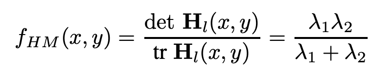
In this image, I filtered corners that are local maximums of (50, 50) patch and has a h value above 0.25. This is only to better show the result.
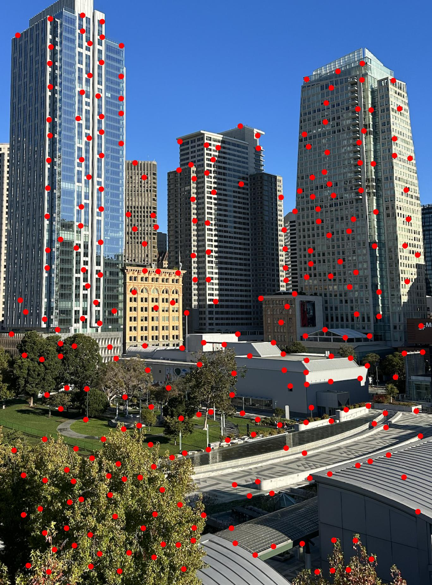
Adaptive Non-Maximal Suppression
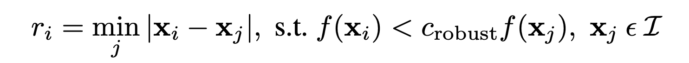
I applied Adaptive Non-Maximal Suppression (ANMS) to refine the detected corner features by selecting the most significant ones. The method works by computing a suppression radius for each corner point based on its strength relative to other stronger corners within a specified robustness factor. The radius is defined as the distance to the nearest stronger point. After calculating these radii, I selected the top points with the largest radii, resulting in a refined set of key points.
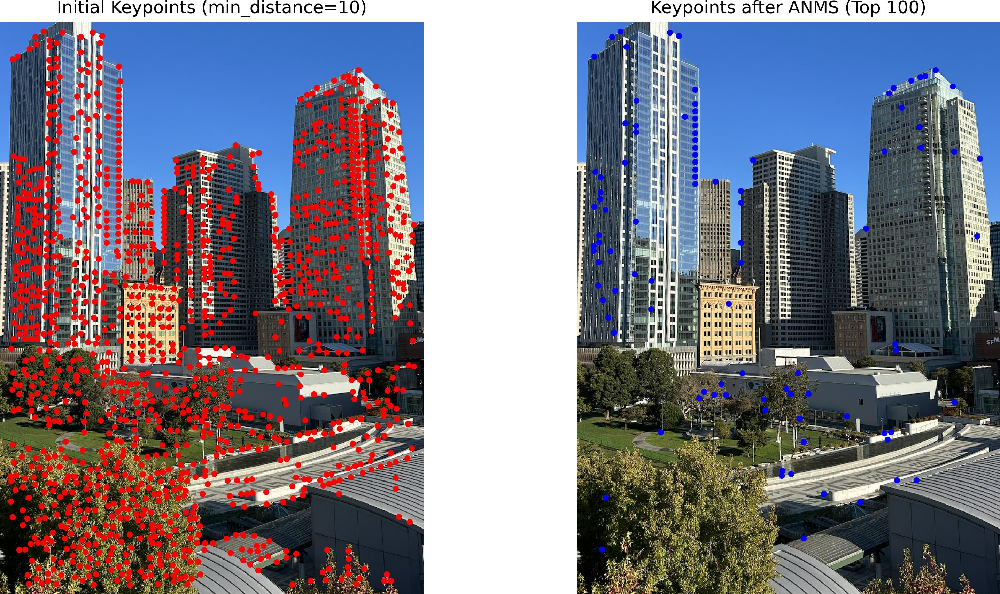
Part 2: Feature Descriptor
I extracted feature descriptors for each detected keypoint to uniquely characterize them. For each keypoint, I extracted an 8x8 patch of pixel values from a larger 40x40 window centered around the keypoint. The method involves creating these local image patches and applying Gaussian smoothing to reduce noise. Each patch is resized to a smaller, fixed dimension (8x8), and then normalized by subtracting its mean and dividing by its standard deviation. This normalization step helps to create scale-invariant and robust descriptors. The resulting feature descriptors are stored as flattened vectors for further matching.
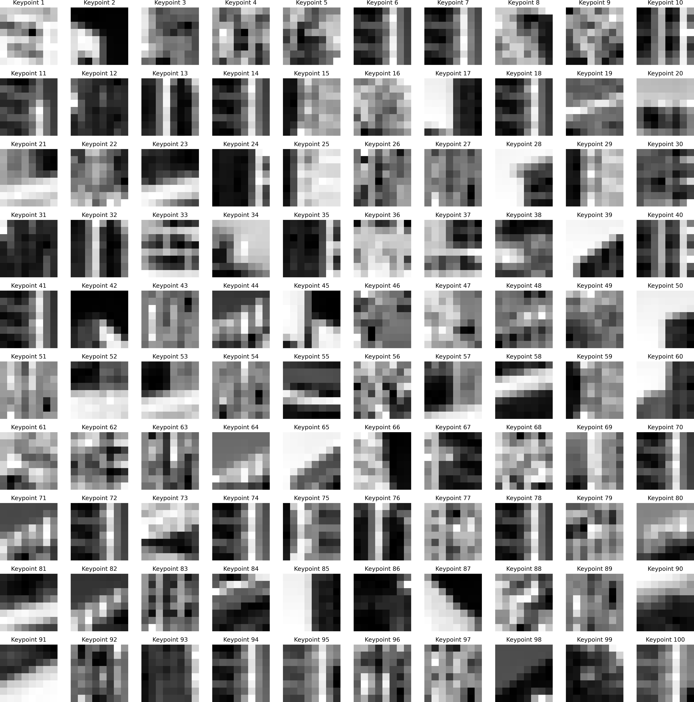
Part 3: Feature Matching (Lowe)
I implemented feature matching using the Lowe’s ratio test to identify corresponding points between two sets of feature descriptors. For each keypoint, I first extracted a local 3-channel 8x8 patch from a 40x40 window in the original color image. Each patch was resized, normalized, and converted into a descriptor vector. To find matches, I calculated the Euclidean distances between pairs of descriptors from the two images. For each descriptor, I identified its two nearest neighbors and computed the ratio of their distances. By comparing this ratio to a predefined threshold, I selected matches where the closest neighbor was significantly closer than the second, thereby filtering out ambiguous matches. The resulting matches were pairs of keypoints with strong correspondences.
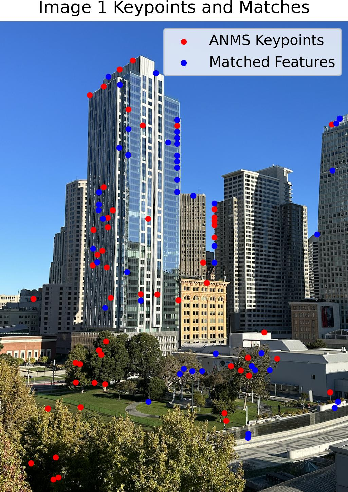
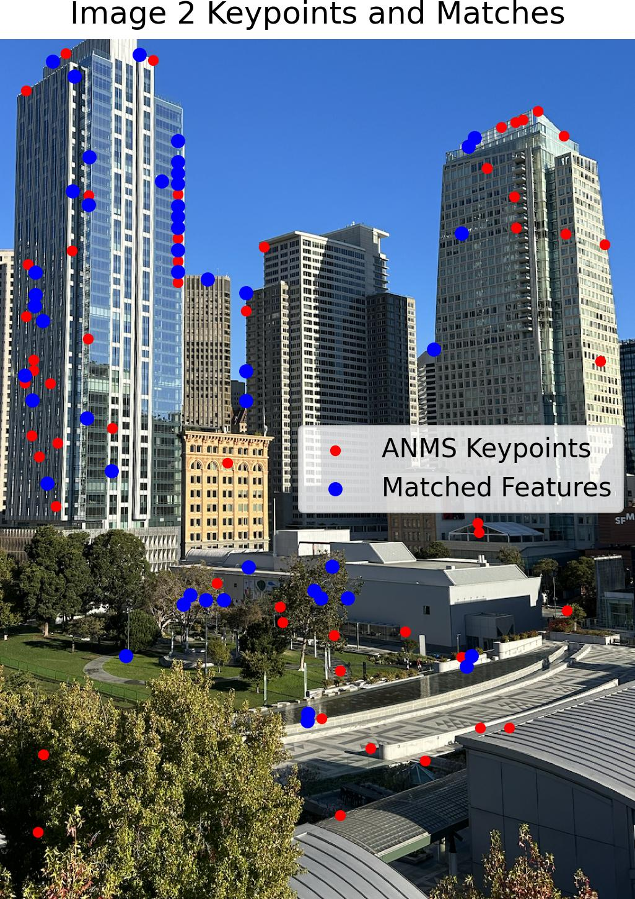
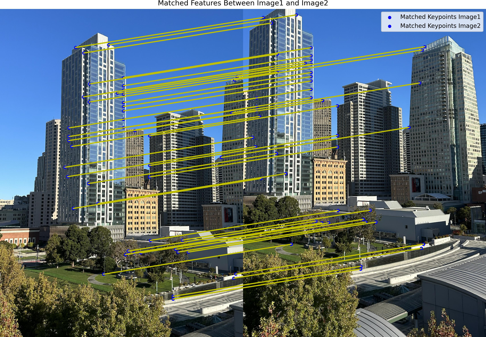
Part 4: RANSAC
I used RANSAC (Random Sample Consensus) to robustly estimate the homography between two sets of matched keypoints. The RANSAC algorithm works by repeatedly selecting a random subset of four matches to compute a candidate homography. For each candidate, I transformed all keypoints using the homography and calculated the distance between the transformed points and their corresponding keypoints in the second image. Matches with distances below a set threshold were considered inliers. The homography with the most inliers was chosen as the best estimate. This process effectively eliminates outliers and refines the set of matches, ensuring a more accurate transformation between the images.
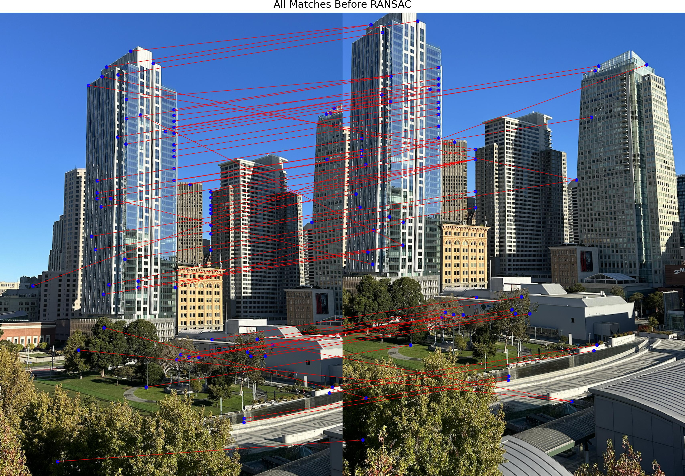
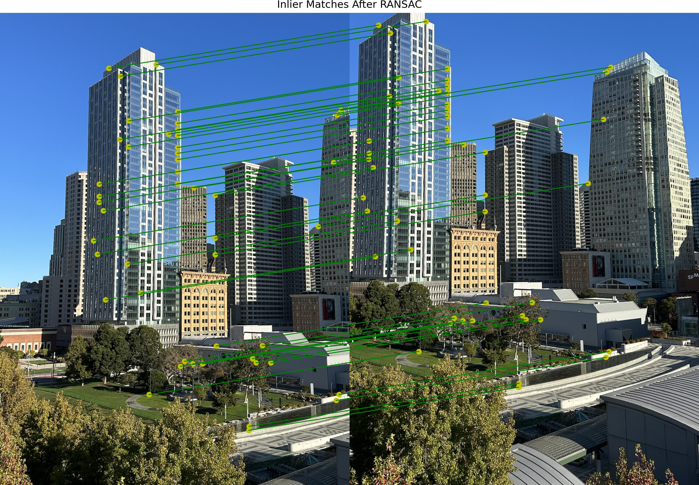
Part 5: Mosaics
Here, I present a comparison between the manually created mosaics and the automatically stitched mosaics. As we can see, the automatic mosaics are even better than manual mosaics!
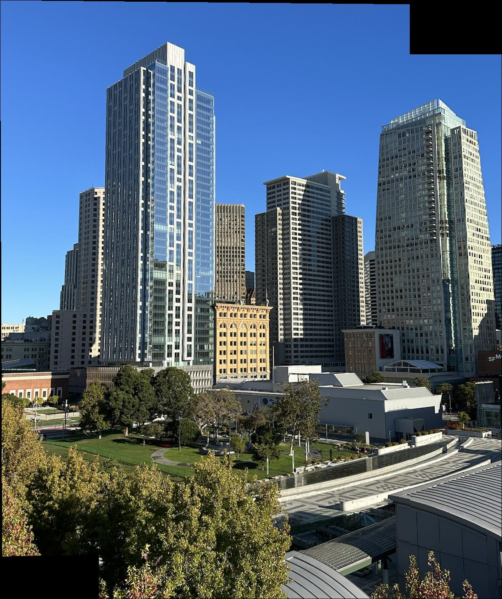
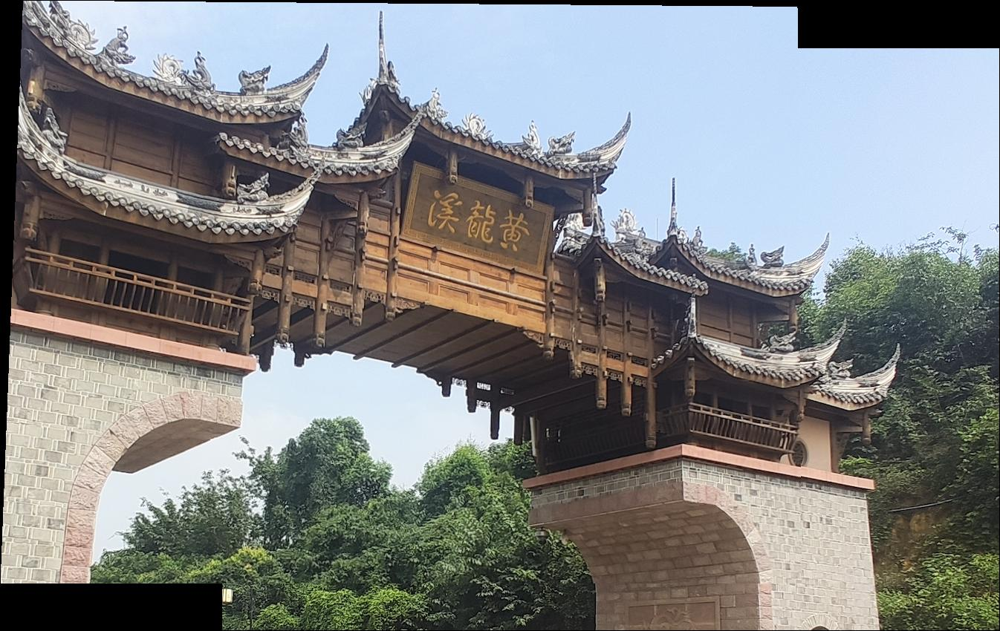
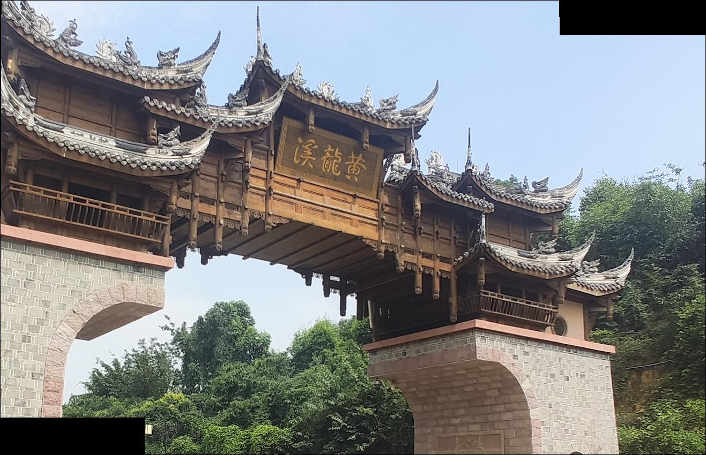
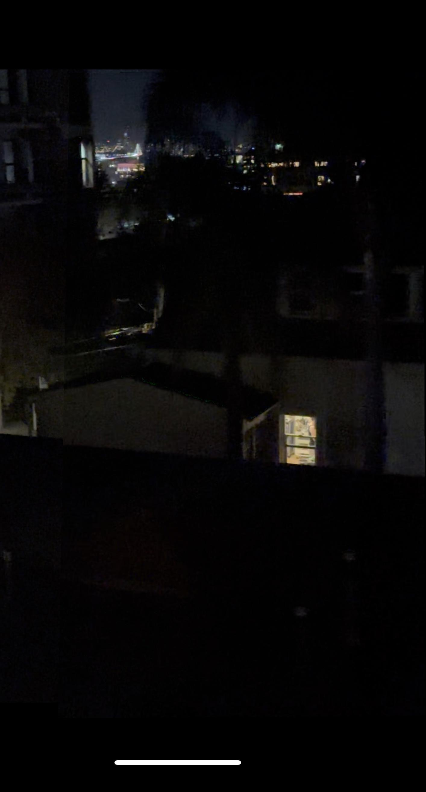
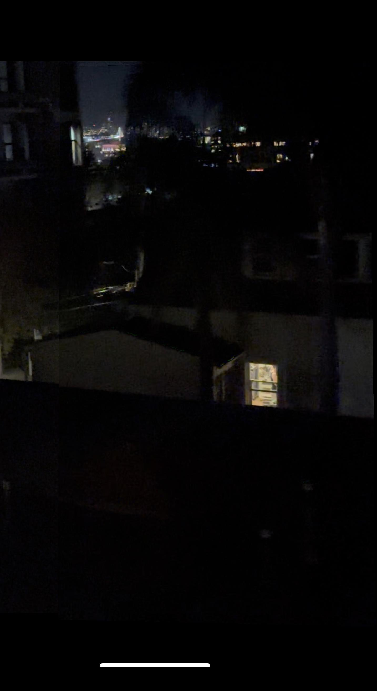
What I learned
The coolest thing I learned from this project is how computer vision algorithms, like feature detection and RANSAC, can seamlessly combine multiple images into a panoramic mosaic. It’s amazing to see how keypoint detection, feature matching, and robust homography estimation come together to align and blend images accurately. This project showed me how these powerful techniques turn complex math into visually stunning and practical results!